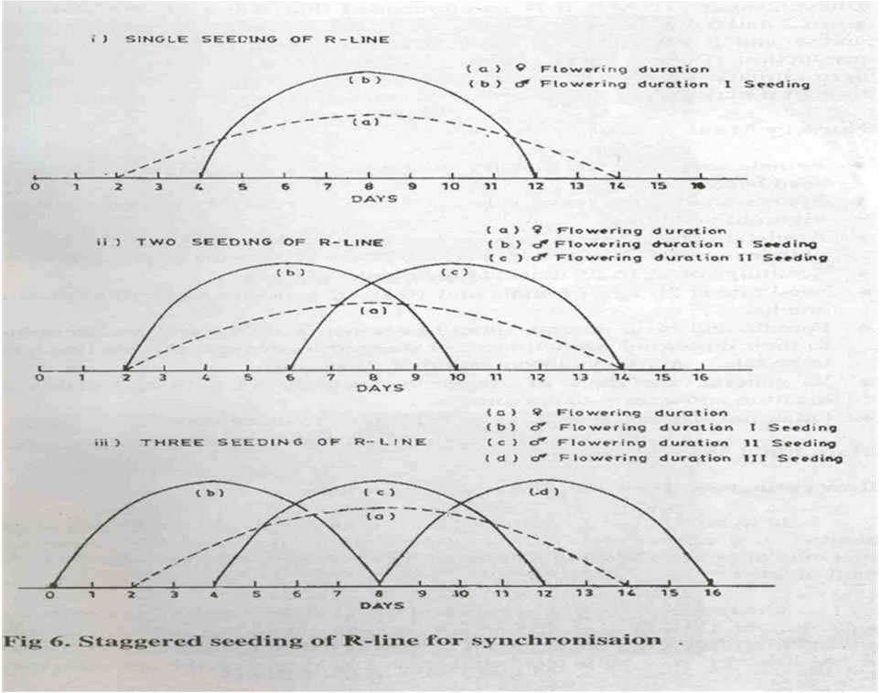
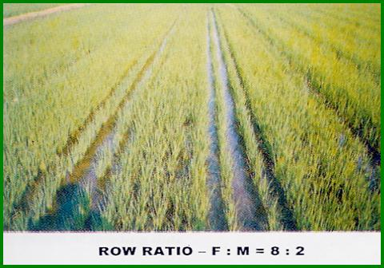
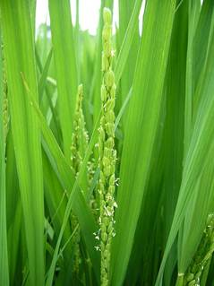
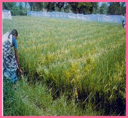
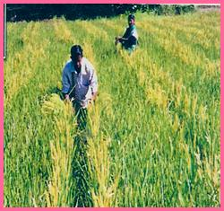

GPBR 112 :: Lecture 10 :: HYBRID SEED PRODUCTION IN PADDY

Breeding technique for commercial
hybrid seed production : Cytoplasmic geneic male sterility system
Stages of seed production for : Breeder seed – foundation seed seed certification certified
Seed Multiplication work at different Stages
Breeder Seed stage : A (AxB), B, R lines are raised
separately under isolation.
Foundation Seed stage : A (AxB) and R lines raised separately under isolation.
Certified seed stage : A and R line are crossed under
isolation to get hybrid.
Systems of hybrid seed production
- Three line method or CGMS system (popular)
- Two line method or environmental genetic male sterility (EGMS) system that involve PGMS (photosensitive genetic male sterility) and TGMS (Thermosensitive male sterility system was developed in China and low temperature hilly areas of Tamil Nadu
Popular hybrids
CORH1 : (IR 62829A x IR 10198- 66–2R)
CORH2 : IR 58025A x C 20R
CORH3 : TNAU CMS 2A X CB 87 R (110-115 days)
ADTRH1 : IR 58025A x IR 66R
Genes involved in EGMS
- One or two pairs of recessive nuclear genes (cytoplasm involved)
Advantages of EGMS system
- Maintainer lines are not involved
- Choice of parents are more.
- No negative effect on sterile cytoplasm
Genes for fertility restoration in CGMS system : Rf1 and Rf2
COMMERCIAL SEED PRODUCTION TECHNIQUE
Land requirement : similar to variety
Isolation
Space isolation : Foundation seed stage : 20 Certified seed stage : 100 m
Time isolation : 20 days either earlier or later for other
varieties compared with MS line.
Barrier isolation : • 30m of wood lot / tall crops
• plastic sheets of 2m height
Season
Kharif (May- June sowing)
Rabi (December- January sowing)
Rabi is more suitable than kharif.
Favourable climatic conditions during flowering for higher seed set.
- Daily mean temperature 24 - 30oC
- Relative Humidity 70 - 80 %
- The difference between day and night temperature should be 8-10oC.
- Sufficient sunshine and moderate wind velocity of 2-3 m / second.
- Free from continuous rain for above 10 days during peak flowering season.
Seed set and seed yield will be affected if temperature is below 20oC and above 35oC during the time of flowering. In Tamil Nadu, ideal time for sowing during kharif is 2nd fortnight of May and during rabi 2nd fortnight of December.
- CORH 1 -. 110-115 days (May-June, Dec - Jan)
- CORH 2 - 120-125 days (Rabi)
- ADTRH 1 - 110-115 days (kharif)
Seeds
Seed selection: Purchase from authenticated source with tag and Bill
For Foundation stage - (A & B lines)
For Certified stage - (A & R lines)
Seed rate : Female : 20 kg /ha
: Male : 10 kg /ha
Nursery Management
- Keep irrigation channels separately for the parental line
- For Dec-Jan sowing take up staggered sowing for male twice or thrice with the interval of 10-15 days (3,10,15daysfor effective seed setting)
- Keep the nursery area free of weeds.
- Apply DAP @ 2 kg / cent as basal to get vigorous seedlings.
- For April-May sowing sow the male 5 and 10 days after female line
- Even split application of fertilizer N is favourable for production of vigorous seedlings.
Main field Transplanting
Spacing
Between A line - (15 x 15cm) Between A and R line - (20 x15cm)
Between R line - (30 x 15cm)
Age of transplanting
A line : 25 days
R line : 14,18,20 days
Fertilizer
Hybrids : 150:60:60
N & K applied in 3 splits
(1) during basal (2) active tillering (3) Panicle initiation.
Staggered sowing of parents for synchronization
As the seed set on CMS line depends on cross pollination it is most important to synchronize the heading date of the male and female parents, especially for the hybrid combinations having parents with quite different growth duration.
In addition, in order to extend the pollen supply time, the male parent is usually seeded twice or thrice at an interval of 4-5 days.
The following 3 methods can be used to determine the differences in seedlings date for synchronization between male and female parents.
- Growth Duration Difference (GDD) method
- Leaf Number Difference (LND ) method
- Effective Accumulated Temperature (EAT) method
Among these 3 methods though the LND method is more reliable one, the GDD method is mostly followed since it is rather simple and easy to adopt. In GDD method by checking the previous data on the difference in duration from seedling to heading between male and female parents, the proper seeding date of both parents in current season can be determined. This method is suitable in seasons or regions where the temperature fluctuation is small.
Staggered seeding of R line for synchronization.
- Single seeding of R line
- Two seeding of R line
- 3 seeding of R line.
- Plant height of the pollinator
- Growth and vigour of the pollinator
- Size of the panicle and amount of residual pollen
- Duration and angle of floret opening in CMS lines
- Stigma exertion of CMS line.
- Select the main tiller (the longest one) and cut at the base where stem and root join.
- Make a longitudinal slit from the base upto the top of the tiller
- Open the slit just above the nodal portion
- Observe the developing panicle with the help of a magnifying lens.
- Enhances panicle and stigma exertion
- Adjust plant height of seed and pollen parents
- Speed up the growth of later tillers and increases the effective tillers
- Sets uniform panicle ear.
- Flag leaf angle is increased
- Increases 1000 grain weight
- Reduces unfilled grains
- Remarkably enhances seed setting and seed yield
- Short duration: Ist Spray on 60 DAS
- Medium duration: Ist Spray on 80 DAS
- Turning of 90% green seeds to straw yellow colour is the stage of physiological maturity
- Moisture content will be 17-20%.
- Male parent should be harvested first .
- Care should be taken to avoid admixture of male line with female line while harvesting.
- The female parent should be threshed at 16-17% moisture content separately in a well cleaned threshing floor.
- The threshed seed should be winnowed and dried to reduce the seed moisture content to 12%
- The seed should not be dried under direct sun between 12 to 3.00 p.m. during hot sunny days.
- Fort short term storage use gunny bag or cloth bag.
- For long term storage use polythene bag of > 700 gauge and dry the seeds to 8% moisture content.
- When compared with varieties, the hybrids and parental lines A & B lines are poor in storability.
- The order of the storage potential is R > F1 > B > A.
- Nursery period, spacing, seed rate, fertilizer dose and days to maturation vary with short, medium and long duration varieties.
- Grain of paddy could be (visual) graded as long slender, short, medium bold based on shape but could not be separated on mechanical grading minding.
- Textures variation though not permanent exists in paddy seeds.
- Seeds of paddy have carbohydrate as the main storage reserve in the form of amylase and amylopectin which differentiates the japonica and indica varieties.
- SPLIT HUSK: Problem of split husk occur in hybrid rice seed production where the lemma and palia are not closed properly at tip portion. Occurrence is claimed to nutrient deficiency synchronization defects and genetic factors, as it
- Occurs more in female line than male line. Split husk reduces the germination due to heavier load of fungal colonies. Seed multiplication ratio 1:152

Row ratio: 8:2 or 10:2
Factors influencing row ratio
Layout for transplanting
To facilitate out crossing, the rows of male and female in the seed production plot should be perpendicular to the prevailing wind direction expected at flowering time of the parents.
Practically a row ratio of 8:2 (A x R) is currently adopted for hybrid seed production and the transplanting sequence for 8:2 row ratio is as follows:
Transplanting of the 'R' line
Transplant the seedlings of ' R' line in paired rows of 30 cm apart.
In case of 2 staggered seedlings of R line, the first and second sown R line seedlings may be planted in two separate rows at 15 cm spacing or the 1st sown seedlings may be planted in both the rows with 30 cm spacing and 2nd sown seedlings may be planted in the middle of two seedlings in both rows. Whereas in three staggered seedlings of R line all the seedlings may be pulled out separately, mixed together thoroughly by spreading one over the other and planted in the two paired rows @ 2-3 seedlings per hill with 15 cm spacing within the rows. It is more convenient, easy and labour saving method incase of large scale seed production. By proper synchronization, higher seed set and yield have been recorded in 3 staggered seedlings of R line. Leave a 145 cm or 110 cm wide block between paired rows of R line seedlings for transplanting 8 rows blocks of A line seedlings.
Row ratio, row direction, spacing and planting pattern for hybrid rice seed production.
R |
R |
A |
A |
A |
A |
A |
A |
A |
A |
R |
R |
x |
x |
x |
x |
x |
x |
x |
x |
||||
x |
x |
x |
x |
x |
x |
x |
x |
||||
x |
x |
x |
x |
x |
x |
x |
x |
||||
x |
x |
x |
x |
x |
x |
x |
x |
||||
x |
x |
x |
x |
x |
x |
x |
x |
||||
x |
x |
x |
x |
x |
x |
x |
x |
||||
x |
x |
x |
x |
x |
x |
x |
x |
||||
x |
x |
x |
x |
x |
x |
x |
x |
||||
R |
R |
A |
A |
A |
A |
A |
A |
A |
A |
R |
R |
Female: Male ratio = 8:2 wind direction :
Transplanting of the 'A' line
Transplant the ' A' line seedlings in blocks of 8 rows in between the paired rows of ' R' line seedlings. Transplant with one or two seedlings per hill with inter and intra row spacing of 15 x 15 cm in 145 cm wide block or 10 x 15 cm in 110 cm wide block according to the fertility of field. Leave a 20 cm spacing between the ' A' line rows and the nearest ' R' line rows.

Prediction of heading date
The method, which is widely used and found to be effective, is by examining the development of young panicles. Based on the morphological features, the young panicles are classified into 8 development stages. The synchronization in flowering can be predicted by using such criteria. In practice, about 30 days before heading, the male and female parents in the seed production field are sampled and their young panicles within the main clumps and tillers are carefully observed with a magnifying lens every three days. Usually female and male parent will take 27 and 32 days respectively from panicle initiation to heading in 8 stages.
Method of observing panicle initiation
Adjustment of flowering date
If it is found during the first 3 stages of panicle differentiation that synchronization of flowering will not be attained, the earlier developing parent should be applied with quick releasing nitrogen fertilizer (2% urea spray) or apply 35 kg /ha of urea with knapsack sprayer at 500 lit /ha and the later developing parent should be sprayed with 2% solution of DAP. By this measure a difference of 4 to 5 days may be adjusted.
If it is found during the later stages of panicle differentiation that synchronization of flowering will not be attained a difference of 3-4 days may be adjusted by drainage or irrigation because the R lines are more sensitive to water than CMS lines. For instance, if R line is found to be earlier, draining water from the field will delay the panicle development. On the other hand if R line is found to be late, higher standing water would facilitate rapid panicle development.
 If the difference in flowering period between the two parents reaches 10 days or more it is necessary to remove the panicles from early developing parent and apply nitrogen fertilizer subsequently, thus making it late emerging tillers or unproductive tillers bear panicles and subsequently achieve synchronization of flowering.
Further during the flowering stage if the blooming time is found not to be synchronized (usually the R line flowers earlier than CMS line) adjustments can be made in blooming time by improving the microclimate in the field through drainage, removing dew drops from the CMS plants and spraying cold water to the R lines.
Application of Gibberellin (GA3)
GA3 plays an important role in rice hybrid seed production. It can adjust physiological and biochemical metabolism of rice plant especially stimulating the elongation of young cells. About 25-30%. spikelets of a panicle are inside the flag leaf sheath in most of the indica CMS lines than that of the Japonica CMS lines. GA3 has a definite role in exertion of panicle. In general, it is recommended that 50 g /ha with knapsack sprayer in two split doses, i.e. spray on 15-20% earhead emergence and 2nd spray in the next day for enhanced seed set.
GA3 will not dissolve in water and hence it should be dissolved in 75-90% alcohol (1g in 20-25 ml of alcohol) and make the required solution. Spraying should be done at 8 to 10 a.m. and 4-6 p.m.
Advantages of GA3 application
Supplementary pollination
Natural outcrossing was recorded less than 10% by Ramlingam et al. (1994). However, this depends upon the wind direction and its velocity.
Shaking the R line panicles by rope pulling at panicle level or rod driving during anthesis can make their anthers dehisce and spread the pollen widely and evenly thus the outcrossing rate could be increased. It is more effective especially on calm or breezy days.
Generally, supplementary pollination is carried out at 30 minutes interval for 5 times daily both morning and evening during peak anthesis (10-12 am and 2-4 p.m.) until no pollen remains on the R line. It is not needed when the wind is greater than moderate breeze.

Foliar spray
Foliar spray of 2% DAP increases yield and qualities of seed
II nd " 80 "
II nd " 100 "
Roguing
Remove the undesirable plants either in A or R line rows that differ from plants that are true to type. The pollen shedders and off types are removed.
The undesirable plants come from many sources. They may be volunteer plants from the previous cropping.
The most important stages for roguing are at maximum tillering, at flowering and just before harvesting.
Roguing in hybrids
In A line remove pollen shedders. In A line only 40-50% of seed set is possible. If > 60-70% seed is noticed and the panicle is drooping it would be R line (or) other varieties.
Plants to be removed |
A line |
B line |
R line |
Diseased plants |
All |
All |
All |
Parental lines |
R line & B line |
A line & B line |
R line & A line |
Early flowering plant |
All |
All |
All |
Rogues / off types : Based on variation in phenotypic
Characters
Harvesting, threshing & drying
Seed treatment
Seeds are treated with thiram / captan @ 4 g/kg. or with 5 gm halogen mixture. The halogen mixture is prepared by mixing CaOCl2 + CaCO3 for 1 week in air tight container.
Storage
Others - As in variety
Seed Yield
Hybrid yield (F1) : 800-1200 kg ha-1
General Tips
| Download this lecture as PDF here |